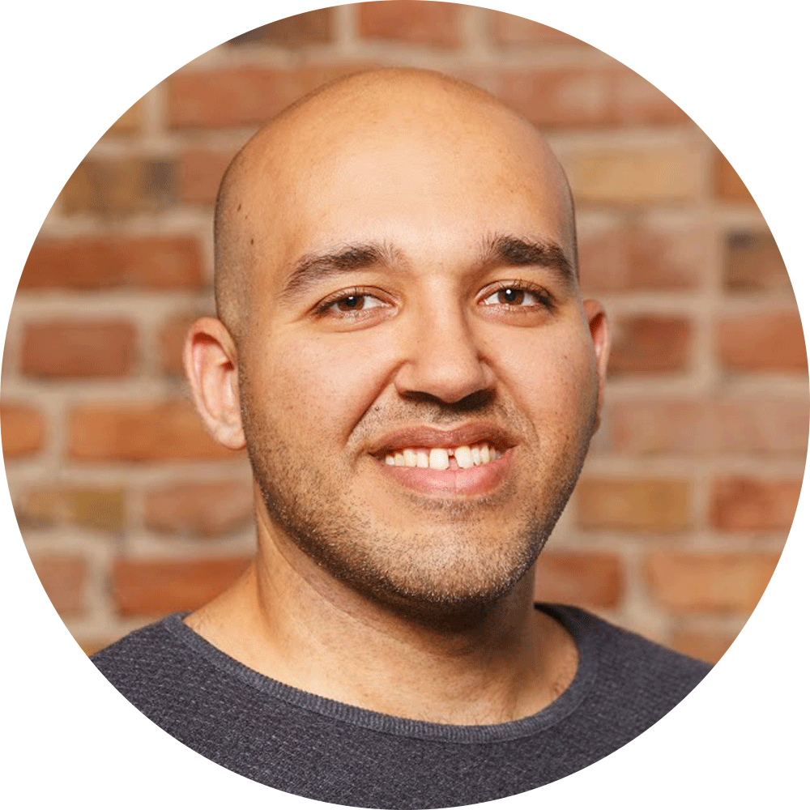

Ashraf Hamza
Career Summary
Egyptian-born, Japan-based trilingual (Arabic / English / Japanese) professional with 14 years living in Japan.
- Ad-tech growth leader (Adways → Adjust → GumGum → Flux): 8 years building and leading APAC teams that translate data into user acquisition, retention, and revenue.
- Zero-to-one builder: first hire or team lead in multiple ventures, creating operations, GTM strategy, and partnerships from scratch.
- Mission now: leverage cross-border ad-tech know-how, market-entry experience, and performance-marketing expertise to help overseas businesses win in Japan.
Work Experience
Product Lead - Japan | Flux Inc.
(July/2022 - Dec/2024)
- Spearheaded product planning and market validation for mobile programmatic ads
solutions, including a Prebid-based header bidding SDK.
- Defined KPIs, conducted market sizing, and delivered product fit analyses to guide
go-to-market strategy.
- Collaborated with partners like AppLovin, Adjust, Magnite, Pangle, and Smaato to
support integration, campaign executions and measurement.
- Created internal knowledge resources and led workshops to educate teams on
monetization strategies and performance metrics.
- Worked cross-functionally with product, engineering, and sales to launch and
iterate on monetization tools informed by real-world campaign data.
-
Head of Operations - Japan | GumGum Inc.
(Jan/2022 - Jun/2023)
- Led the execution of branding and programmatic campaigns, ensuring the
successful deployment of GumGum’s contextual advertising solutions in the
Japanese market.
- Utilized third-party measurement tools such as IAS, MOAT, Intage and Macromill
to assess campaign performance, focusing on metrics like viewability, brand lift,
and audience engagement.
- Worked closely with leadership teams from HQ in LA and regional HQ in Sydney
to incorporate best practices and adapt solutions for the Japanese market.
- Identified market needs to optimize operational excellence and customer service,
implementing solutions to improve turnaround time and service quality.
- Managed a 10-member cross-functional team, maintaining hands-on involvement
in campaign health checks, platform troubleshooting, and data analysis.
-
Team Lead Technical Account Management | Adjust
(Oct/2017 – Dec/2021)
- Led a team of 15 account managers across Japan, Korea, India, and SEA, overseeing project coordination and training programs.
- Collaborated closely with regional sales and technical support leadership.
- Supported medium and large-scale Japanese and global clients, resolving technical challenges and maximizing product usage to enhance satisfaction and reduce churn.
- Provided tailored guidance and consultation to top market players across industries like Gaming, E-commerce, News, Telecom, Dating, Comics, Recruitment, Banking, and VOD.
- Worked daily with the customer success team to define client consultation strategies, including calls, QBRs, technical inquiries, and updates.
- Collected client feedback and feature requests, sharing with product and tech teams to drive new solutions.
- Participated in new feature development by onboarding beta clients and coordinating implementation with internal teams.
- Acted as a subject matter expert, advising on complex issues, attending critical client meetings, and speaking at seminars and educational workshops.
-
Digital Advertising Operation | Adways Inc
(Feb/2016 - Sep/2017)
- Worked closely with sales team from proposal to deal closing by providing customized advertising strategy for client’s campaigns.
- Planned and managing inbound/outbound digital ads at several media platforms with focus on SNS (Facebook, Twitter, Google, nend, imobile, Amoad and etc.).
- Managed digital ads with average monthly budget of 20M¥.
Skills
-
Language Skills
- Japanese - Fluent (N1)
- English - Fluent
- Arabic - Native
-
Technical Skills
- Deep understanding of branding, performance and Programmatic advertising, both web and mobile apps.
- Programming Skills:
- Full Stack Web Dev.:
- HTML, CSS, JavaScript
- SQL, PostgreSQL
- node.js, React.js
- Python
- Mobile App Dev.:
- Xcode
- Swift UI KIT
- Swift UI
-
Soft Skills
-
Leadership: Managed and developed cross-functional teams.
-
Client Relations: Built strong client partnerships and delivered tailored solutions.
-
Cross-Cultural Communication: Worked with global and local teams effectively.
-
Problem-Solving: Resolved complex issues and improved client satisfaction.
-
Strategic Planning: Set goals and executed business strategies.
-
Coaching: Mentored teams and conducted training sessions.
-
Negotiation: Secured partnerships with global tech companies.
-
Adaptability: Thrived in dynamic and fast-paced environments.
Education
-
BSC / Tourism from Alexandria Universary, EGYPT | 2001 - 2005
- 4 years study specialized in Egyptology, economy, foreign languages (English/ Japanese) and tourism industry.
Let's get in touch!
Thank you very much for taking the time to read through my resume.
If you are interested in hiring me, please contact me through my info in the link below.
